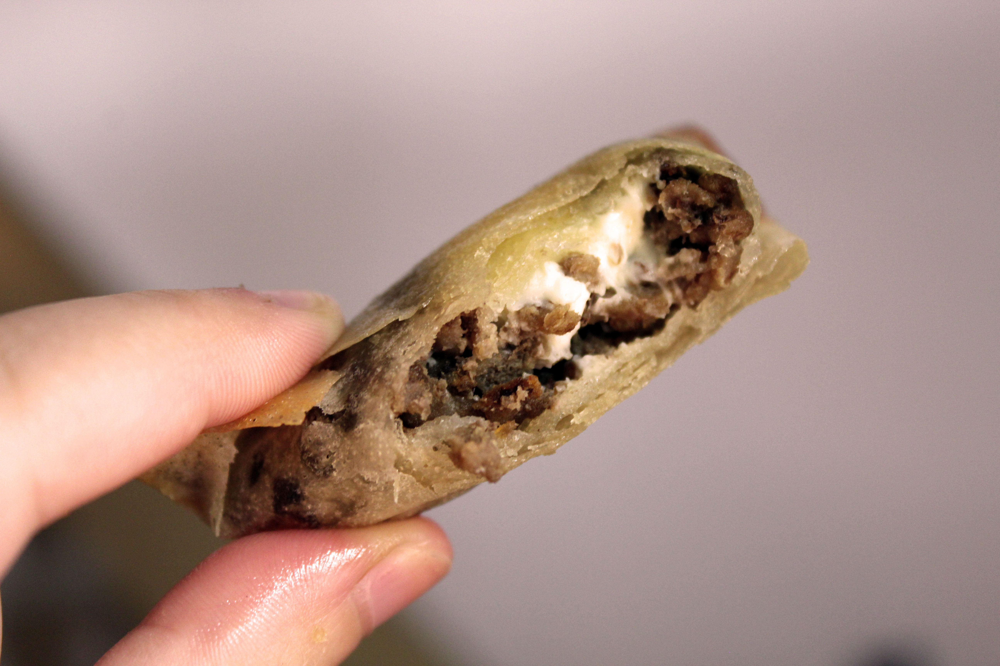

Les ingrédients
- Un paquet de feuilles de Brick
- 400g de boeuf hâché 5% de mat. grasse
- Fromage type Kiri ou Vache qui rit
- 3 c.à.s de persil
- 1 c.à.c de paprika
- 2 c.à.c d'ail semoule
- 2 oignons émincés
- Huile d'olive
- Poivre
- Sel
Ces bricks de viande hâchée aux saveurs orientales délicates sont particulièrement réalisées lors du mois du ramadan. Cette recette d'origine marocaine est légère et facile à réaliser. À déguster avec une salade ou des petits légumes.
Ce plat à la forme gouteuse en bouche s’accorde bien avec des vins rouges, assez jeunes. Je vous recommande les vins rouge de Bourgogne (Volnay, Pommard...), de la vallée du Rhône (Gigondas, Vacqueyras...) mais certains Bordeaux comme le Pomerol ou le Moulis iront trés bien aussi.
Recette proposée par Justine
Préchauffez le four à 180°c. Faites revenir les oignons émincés dans un peu l'huile d'olive et ajoutez l'ail semoule.
Ajoutez la viande hâchée, le persil, le paprika et un peu de poivre. Faites cuire à feu doux. Lorsque la viande est cuite, retirez-la du feu et laissez refroidir.
Déposez une cuillère à soupe de viande et un quart de fromage Kiri sur les feuilles de brick et procédez à un pliage en triangle (en suivant les instructions sur l'emballage). Veillez à bien refermer le triangle afin qu'il ne s'ouvre pas pendant la cuisson.
Disposez ensuite les triangles dans un plat allant au four, en les badigeonnant d'huile d'olive recto/verso à l'aide d'un pinceau. Enfournez à mi-hauteur pour un quart d'heure en pensant à les retourner afin d'avoir une cuisson homogène. Les bricks sont cuites quand elles sont dorées et bien croustillantes.
Bon appétit !
Bof... J'ai remplacé les feuilles de brique par des tranches de jambon, ma soeur, végétarienne, n'a pas aimé du tout. Je ne referai plus cette recette !
pour une première ce fut une franche réussite...accompagné d’un Chateauneuf-du-Pape 2012, on s’est régalé !!!
Martin Franchet
J'ai testé cette recette hier, c'était très bon ! Attention à ne pas les laisser trop longtemps au four cependant...